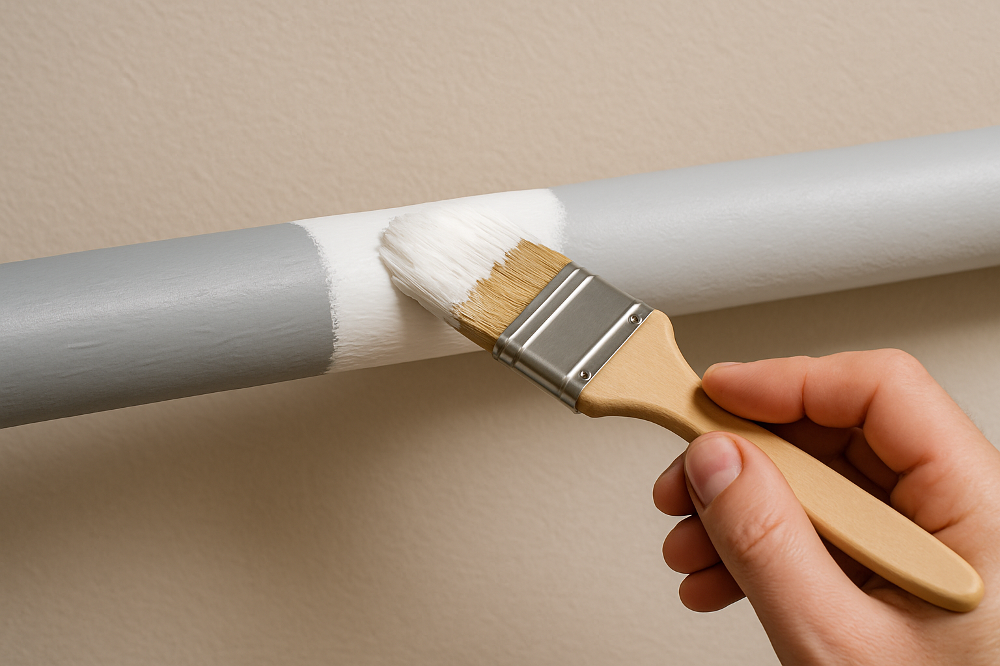
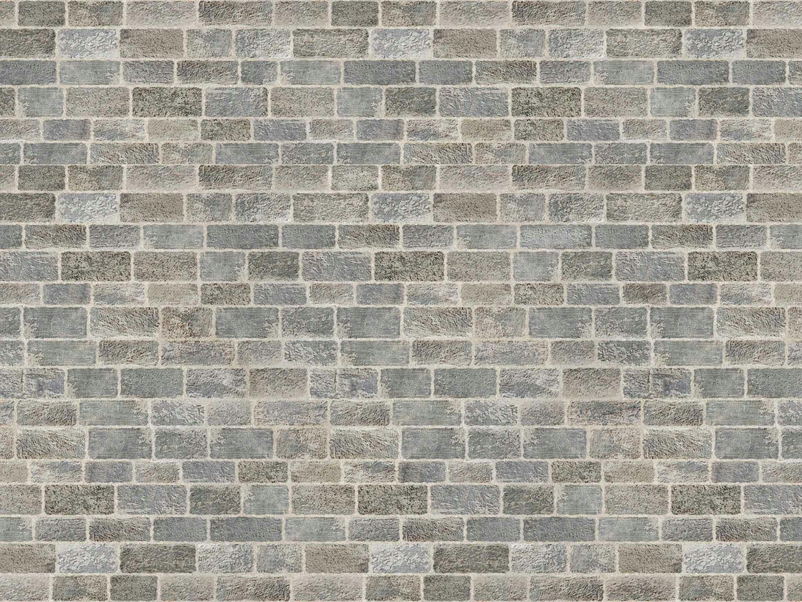
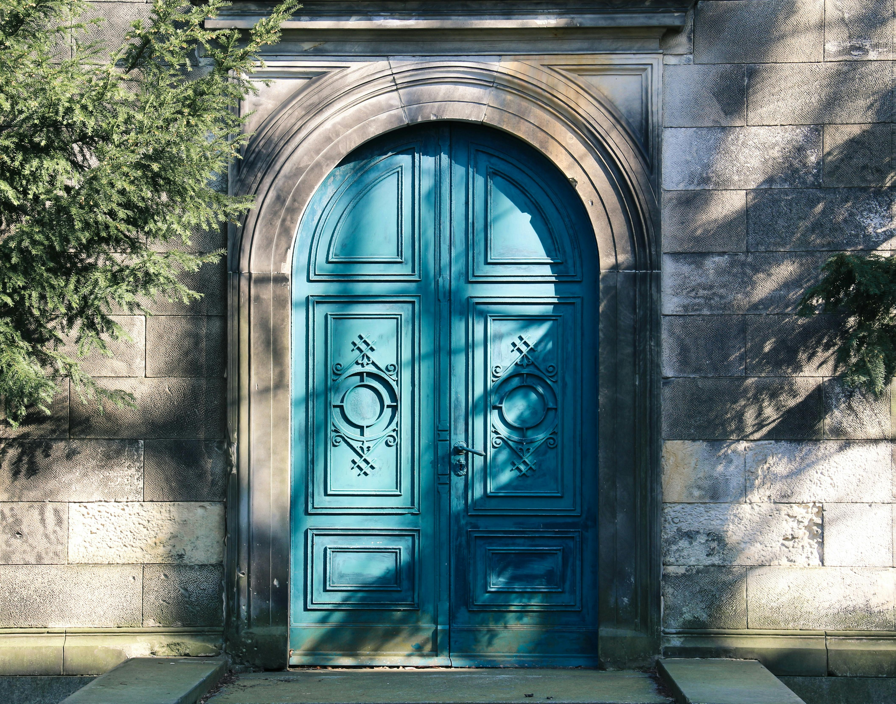
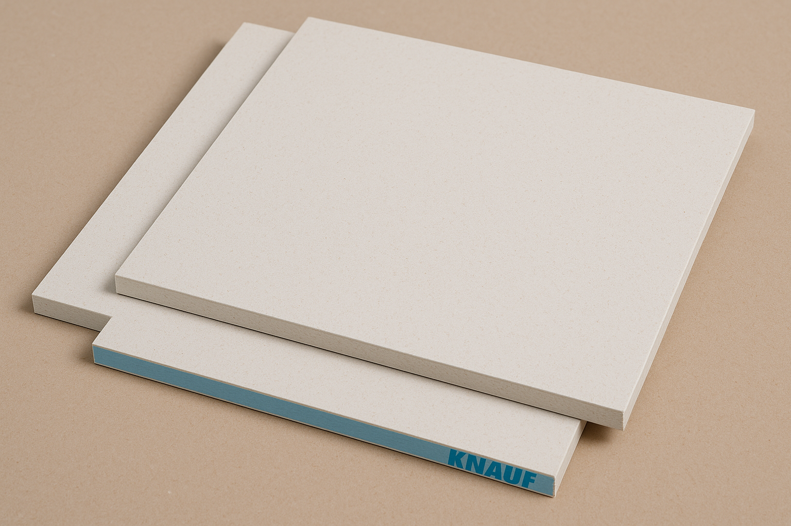
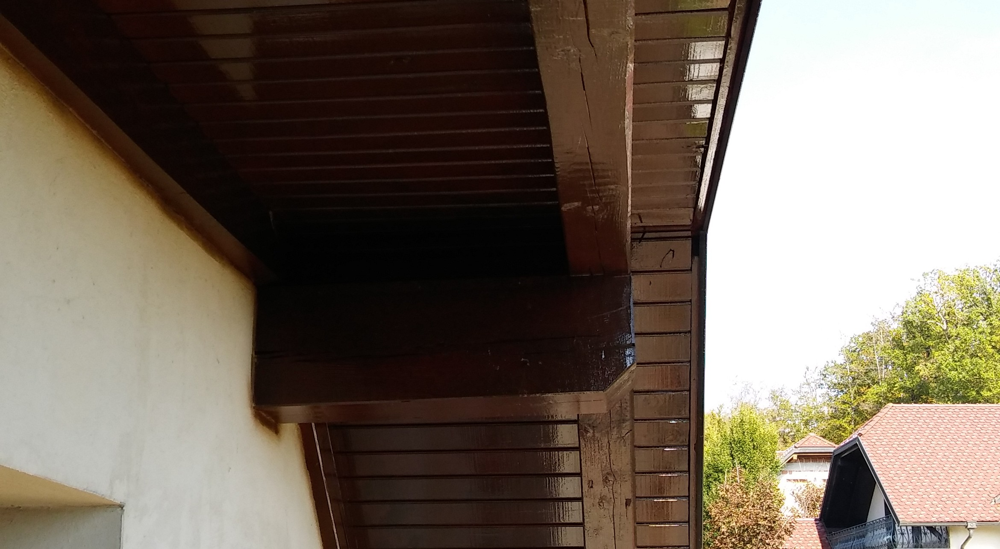
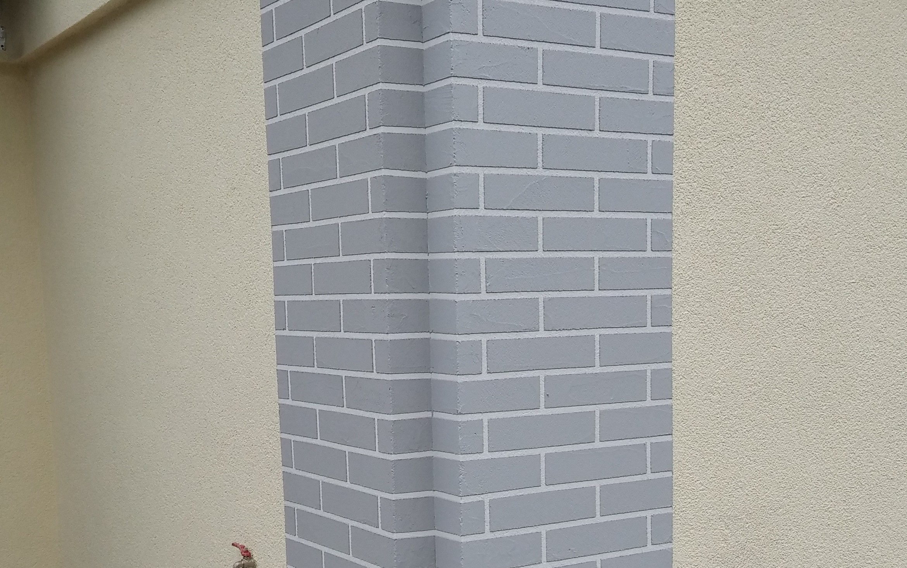

NAŠE STORITVE

Glajenje in brušenje sten
Za popoln videz sten je potrebna temeljita priprava. Z glajenjem in brušenjem odstranimo nepravilnosti, stare barve in pripravljamo podlago za pleskanje ali tapete. Končni rezultat so gladke, ravne stene, brez razpok, vdolbin ali drugih napak, kar zagotavlja profesionalen videz in boljši oprijem barve ali drugih zaključnih slojev.

Glajenje in brušenje sten
Za popoln videz sten je potrebna temeljita priprava. Z glajenjem in brušenjem odstranimo nepravilnosti, stare barve in pripravljamo podlago za pleskanje ali tapete. Končni rezultat so gladke, ravne stene, brez razpok, vdolbin ali drugih napak, kar zagotavlja profesionalen videz in boljši oprijem barve ali drugih zaključnih slojev.

Ročno in strojno pleskanje notranjih prostorov
Pleskanje notranjih prostorov je eden izmed najosnovnejših, a hkrati najpomembnejših korakov pri osveževanju ali prenovi prostora. Nudimo tako ročno kot strojno pleskanje, odvisno od potreb in zahtevnosti projekta. Ročno pleskanje omogoča natančnost na težje dostopnih mestih, medtem ko strojno zagotavlja hitrejšo izvedbo in enakomeren nanos barve na večjih površinah. Uporabljamo kakovostne premaze, ki so trajni, pralni in odporni na obrabo.
Polaganje tapet
Tapete ponovno pridobivajo na priljubljenosti zaradi svoje sposobnosti, da prostoru dodajo karakter, teksturo in stil. Nudimo profesionalno polaganje vseh vrst tapet, od klasičnih papirnatih do vinilnih in tekstilnih. Natančna priprava površine in pravilno lepljenje zagotavljata, da so tapete brez mehurjev, gub ali vidnih stikov.

Polaganje tapet
Tapete ponovno pridobivajo na priljubljenosti zaradi svoje sposobnosti, da prostoru dodajo karakter, teksturo in stil. Nudimo profesionalno polaganje vseh vrst tapet, od klasičnih papirnatih do vinilnih in tekstilnih. Natančna priprava površine in pravilno lepljenje zagotavljata, da so tapete brez mehurjev, gub ali vidnih stikov.

Pleskanje oken in vrat z lazurnimi in pokrivnimi barvami
Pleskanje stavbnega pohištva (okna, vrata) ni le dekorativno – je tudi zaščitno. Uporabljamo lazurne premaze, ki poudarijo naravno strukturo lesa in ga zaščitijo pred vremenskimi vplivi, ter pokrivne barve, kadar želimo popolnoma enoten barvni videz. Površine predhodno pripravimo s čiščenjem, brušenjem in temeljno zaščito, kar zagotavlja dolgotrajno zaščito lesa in eleganten izgled.
Bandažiranje knauf plošč
Bandažiranje knauf plošč je ključni korak pri zaključevanju mavčnokartonskih (knauf) sten in stropov. Gre za postopek, pri katerem se zapolnijo vsi spoji med posameznimi ploščami ter prekrivajo vijaki, s katerimi so pritrjene na podkonstrukcijo. Namen bandažiranja je ustvariti popolnoma enotno, gladko in nevidno površino, ki je pripravljena za končne dekorativne obdelave – kot so pleskanje, glajenje, tapeciranje ali nanašanje dekorativnih tehnik.

Bandažiranje knauf plošč
Bandažiranje knauf plošč je ključni korak pri zaključevanju mavčnokartonskih (knauf) sten in stropov. Gre za postopek, pri katerem se zapolnijo vsi spoji med posameznimi ploščami ter prekrivajo vijaki, s katerimi so pritrjene na podkonstrukcijo. Namen bandažiranja je ustvariti popolnoma enotno, gladko in nevidno površino, ki je pripravljena za končne dekorativne obdelave – kot so pleskanje, glajenje, tapeciranje ali nanašanje dekorativnih tehnik.

Imitacija opeke
Imitacija opeke je sodobna slikopleskarska tehnika, s katero ustvarimo videz opečnate stene brez dejanske uporabe opek. Gre za dekorativno obdelavo površine, pri kateri s pomočjo šablon, posebnih orodij in kakovostnih barv pričaramo naraven, tridimenzionalen učinek opečne strukture.
